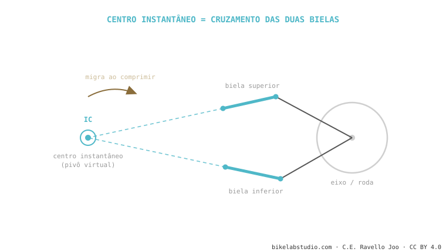

O centro instantâneo de rotação (instant center, IC) é o ponto — real ou virtual — sobre o qual a sua roda traseira gira a cada instante. Em um monopivô é o pivô físico; em um sistema de bielas é um ponto imaginário onde se cruzam os prolongamentos das duas bielas. De onde está esse ponto saem o anti-squat e o axle path — e ele se move à medida que a suspensão comprime. É a peça que conecta toda a cinemática.
Entenda este ponto e você entende por que VPP, DW-link, Horst e monopivô se comportam diferente: todos são, no fundo, formas de colocar o centro instantâneo onde o engenheiro quer.
Quando você abre uma porta, ela gira nas dobradiças. Essa dobradiça é o seu centro de rotação. Agora imagine uma porta cuja dobradiça se move sozinha enquanto você abre: isso é a sua suspensão.
A cada instante, a roda traseira está girando sobre um ponto. No monopivô esse ponto é óbvio: o parafuso do pivô, que você toca com o dedo. A roda traça um arco perfeito ao redor dele. Fácil.

E se não houver um único pivô, mas duas bielas? Aqui está a mágica. Prolongue com uma régua a linha de cada biela até que se cruzem. Esse cruzamento é o centro instantâneo: o ponto sobre o qual a roda gira naquele instante, mesmo que ali não haja nenhum parafuso. Por isso se chama pivô virtual — é matemático, não físico. Pode estar dentro do quadro, à frente do movimento central ou até fora da bike.
Isto é o que quase nenhum blog conecta. A posição do centro instantâneo em relação a duas referências — a coroa/movimento central e o ponto de contato do pneu com o chão — é de onde se calculam os dois números que você já conhece:
O anti-squat sai de traçar uma linha do contato do pneu traseiro em direção ao centro instantâneo e ver onde ela cruza a linha da corrente. O axle path é simplesmente o arco que o eixo descreve girando ao redor do centro instantâneo naquele instante. Mude onde está o IC e muda as duas coisas ao mesmo tempo. Por isso um engenheiro não "ajusta o anti-squat" diretamente: ele move o centro instantâneo, e o anti-squat e o axle path o seguem.
A palavra-chave é instantâneo. Nas bielas, ao comprimir a suspensão cada biela gira um pouco, então o cruzamento das suas linhas se move. O centro instantâneo de agora não é o de daqui a 30 mm de curso. Essa migração é justamente o que permite que uma bike tenha muito anti-squat no início (pedala firme) e pouco no final (absorve sem chutar) — impossível com um pivô fixo. A migração é a vantagem real dos sistemas de bielas sobre o monopivô, não o número de pivôs em si.
O ponto sobre o qual a sua roda traseira gira em um instante. No monopivô é o pivô real; nas bielas, um ponto virtual onde suas linhas se cruzam.
Porque o anti-squat e o axle path saem da sua posição. É a alavanca de projeto que o engenheiro tem.
Sim, exatamente o mesmo. Virtual porque não há parafuso ali: é onde se cruzam as linhas das bielas.
Diga o modelo e te explicamos a cinemática dela: onde cai o IC, como migra e o que significa para o seu pedal. Fale com a gente pelo WhatsApp
© 2026 BikeLab Studio. Conteúdo sob CC BY 4.0: você pode copiar, traduzir e publicar, inclusive com fins comerciais. A citação é obrigatória. Sem atribuição, a licença é revogada automaticamente (CC BY 4.0, §6.a) e o uso passa a ser violação de direitos autorais: solicitamos a retirada do conteúdo e sua desindexação. · Design e propriedade: Carlos Ravello Joo